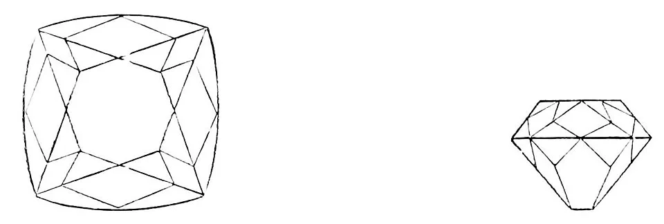

Gem faceting designs
Change the pavilion angle in a simplified diamond section. Trace a single vertical ray through its first encounter with a facet.
Inspect source image

Change the pavilion angle in a simplified diamond section. Trace a single vertical ray through its first encounter with a facet.
